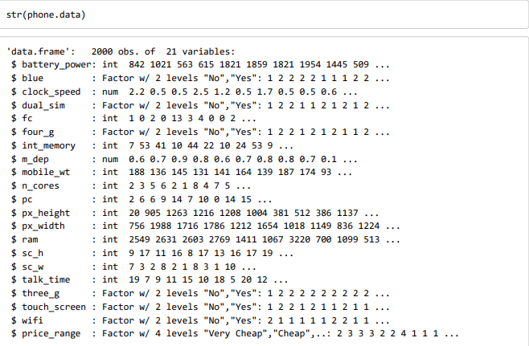
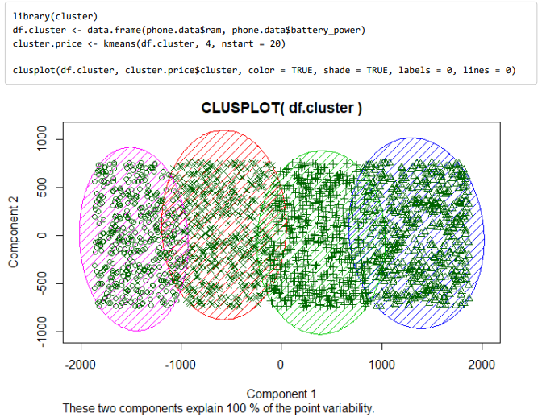
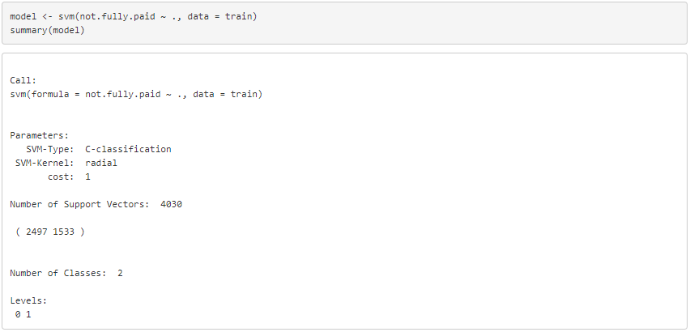
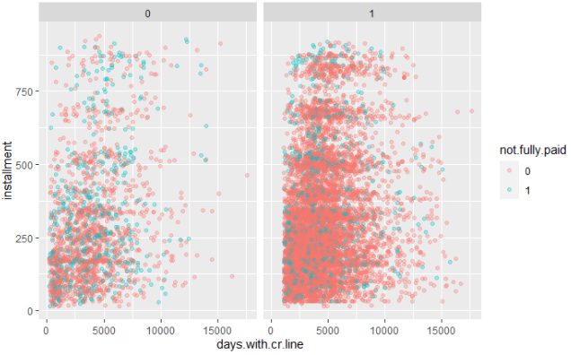
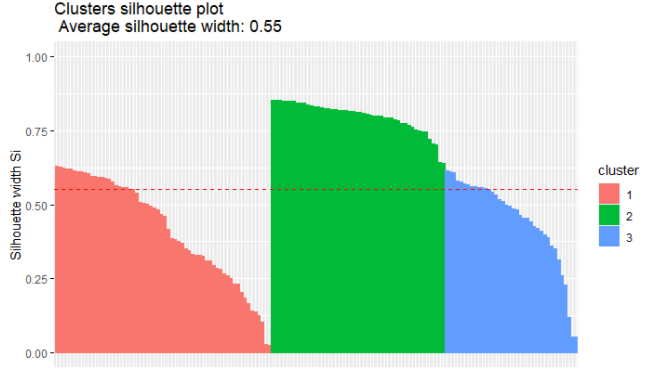
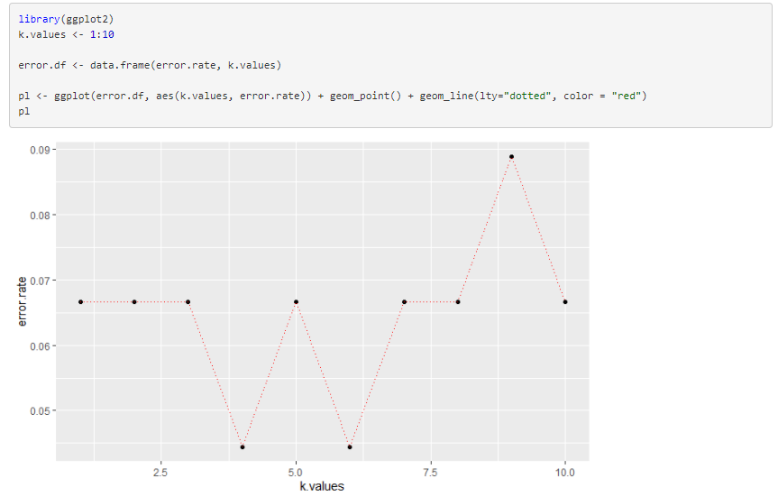
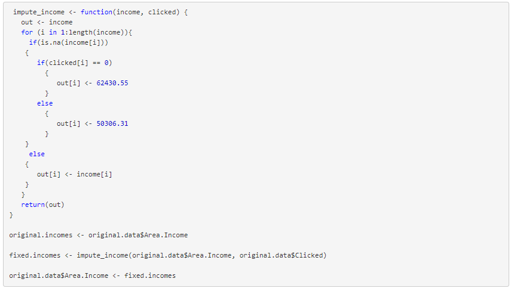
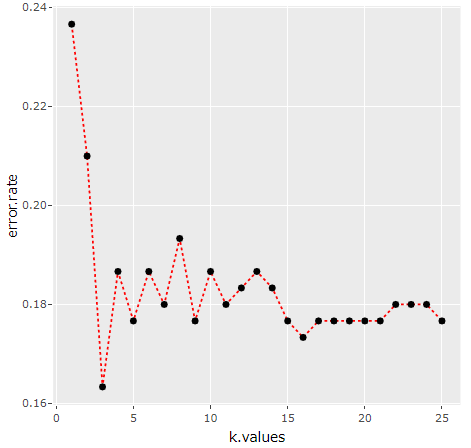

This data was taken from a fictional problem located on Kaggle. The problem involves a businessman who is attempting to start up his own phone company. He has been gathering data on thousands of different types of phones over the years. His goal is to be able to predict what price range a phone is in given the remaining 20 attributes listed in the structure of this data frame (i.e. battery capacity, phone weight, RAM, etc.).
 
In this project, I ran the k-means clustering algorithm on the two most telling attributes and wrote a report at the very end of the notebook based on my observations.
The given dataset came from LendingClub.com. The data had certain financial information on people who had taken out loans. The last attribute in this dataset was whether or not the person ultimately paid off their loans in their entirety. This project had a basic implementation of the svm() function in R. This project originally came from an assignment I worked on as part of a course on Udemy.
 
It's hard to find a data scientist who has never come across the Iris data set. It is a small but super important data set for learning how to implement the k-means clustering algorithm. In this project, I run both the K-means clustering and K-nearest neighbors algorithms. It is obvious that the K-means clustering algorithm does a very good job of predicting the species for each flower.
 
The given dataset has 1,000 records of users with 10 attributes. We are trying to predict whether or not they clicked on an advertisement, which is denoted as 0 or 1 in the last column of the data frame. We want to find out which users are more likely to click on the advertisements based on the other given characteristics in the data frame.
 